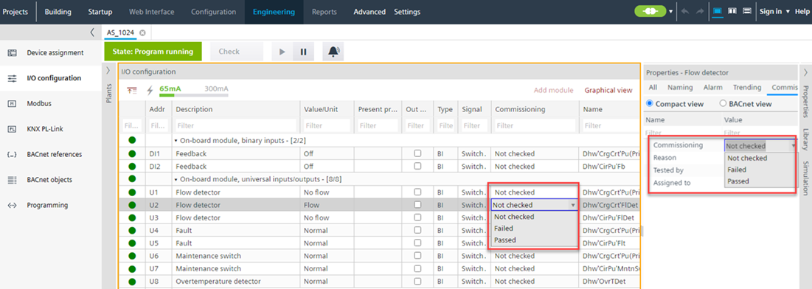
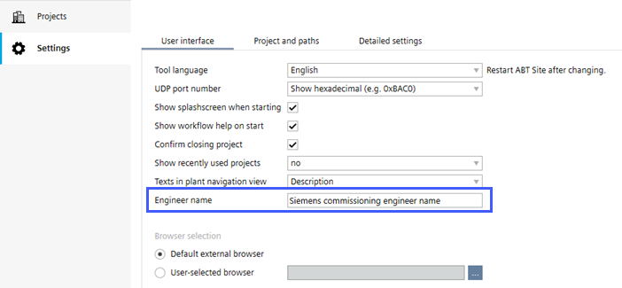
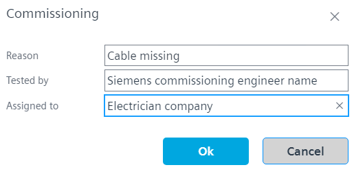
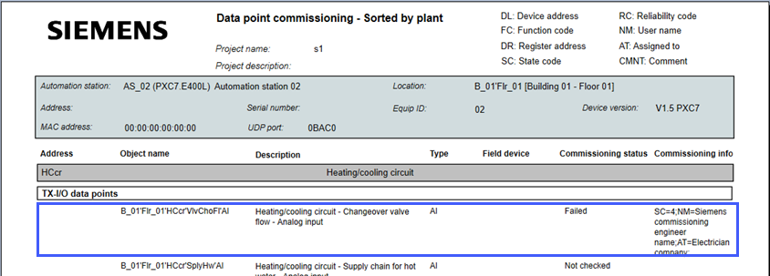

在调试期间创建测试点历史记录
在 ABT 站点编辑器（在“播放”模式期间）进行点测试期间，为每个数据点创建点测试历史记录。

Enter the Engineering name for data point testing
输入的名称存储在数据点属性中，并稍后在报告中打印出来。必须在 ABT 站点中定义一次。
- The project is closed.
- Go to Settings.
- Open the User interface tab.
- In the Engineer name field, enter your name.

Test a data point
- The device is online.
- Go to Engineering.
- Open the I/O configuration task.
- In the Plants navigation view, select a data point.
- Open the Properties tab.
- Go to the Commissioning tab or go to the column Commissioning in the tabular view.
- In the Commissioning field, select Not checked/Passed/Failed option from the drop-down list.
- If you select the Failed option, a Commissioning dialog box displays.

- In the Reason field, select the appropriate reason from the drop-down list. If you select the Other option from the drop-down list, the Comment field is displayed in the Commissioning dialog box. Enter the comments if necessary.
- The Tested by field displays your engineering name.
- Enter the name of the person or company in the Assigned to field to whom this failure has to be assigned.
- Click OK.
- You have added the details for the commissioning failure of the respective data point.
- If you select the Not checked or Passed option, you can see the information in the Properties tab.
- Click the BACnet view in the Properties tab to see the latest Commissioning state and Commissioning information.

- 最新的Commissioning state和Commissioning information也可以在数据点调试报告中找到。
Creating reports

- 使用 ABT Go 查看对象的完整测试点历史记录。